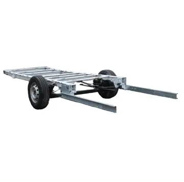
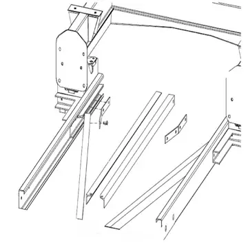
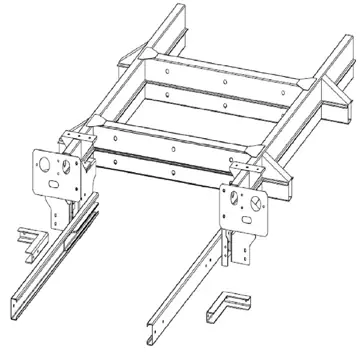

Angebot

Rahmenverlängerung Fiat Ducato Modelle X250/X290 ZFA250 (Baujahr ab 2006 bis heute).
ab 419,00 € 398,00 €inkl. MwSt., versandkostenfrei

Anhängerkupplung für Kastenwagen Fiat Ducato ZFA250 - Abnehmbar ab Bj. 06/2006 bis aktuell – Fahrzeugspezifisch für Wohnmobil & Kastenwagen – mit EG-Typgenehmigung. Passend für: Fiat Ducato. Preis ab 429,00 € inkl. MwSt., versandkostenfrei. Montage in Bohmte und Diez nach Terminvereinbarung möglich.
Entdecken Sie in unserem Montagevideo, wie Sie die abnehmbare Anhängerkupplung für den Fiat DUCATO Kasten (250_, 290_) mühelos selbst montieren können. Unser Schritt-für-Schritt-Guide bietet klare Anweisungen und praktische Tipps, um die Installation zu vereinfachen. Mit hochwertigem Material und präziser Passform gewährleistet unsere Anhängerkupplung nicht nur eine einfache Montage, sondern auch eine zuverlässige Leistung. Investieren Sie in Qualität und Komfort für Ihr Fahrzeug. Verpassen Sie nicht die Gelegenheit, Ihre Anhängerkupplung mit Leichtigkeit zu installieren – sehen Sie sich jetzt unser Montagevideo an und machen Sie sich bereit für unbeschwerte Fahrten mit Ihrem Fiat DUCATO Kasten.
Sie sind ein sportlicher Abenteurer und lieben die Freiheit, jederzeit und überall unterwegs zu sein? Dann ist die Anhängerkupplung für den Fiat Ducato 250 Kastenwagen von Italia Camper 24 die perfekte Ergänzung für Ihr Fahrzeug!
Die Anbringung dieser Anhängerkupplung ist denkbar einfach und dauert nur wenige Minuten. Sobald sie montiert ist, können Sie ohne Einschränkungen Ihre Transportpläne verwirklichen. Egal, ob Sie Ihre Motorräder, Fahrräder oder sogar Ihr Boot mitnehmen möchten - diese Anhängerkupplung erfüllt alle Ihre Anforderungen. Sie bietet Ihnen die nötige Flexibilität und den zusätzlichen Stauraum, den Sie für Ihre Abenteuer benötigen. Damit steht Ihnen nichts mehr im Wege, wenn Sie mit Ihrem Fiat Ducato 250 Kastenwagen die Umgebung erkunden oder sportlichen Aktivitäten nachgehen möchten.
Stellen Sie sich vor, Sie könnten problemlos einen Anhänger an Ihren Fiat Ducato 250 anhängen und all Ihre Ausrüstung bequem mitnehmen. Mit dieser Anhängerkupplung wird dieses Szenario zur Realität. Keine mühsame Suche nach alternativen Transportmöglichkeiten oder Begrenzungen beim Gepäck mehr. Sie haben die Freiheit, alles, was Sie brauchen, einfach und unkompliziert mitzunehmen. Ob Sie einen aktiven Outdoor-Urlaub planen oder einfach nur für spontane Ausflüge gerüstet sein möchten, die Anhängerkupplung für den Fiat Ducato 250 Kastenwagen erfüllt all Ihre Wünsche.
Besonders Camper mit einem Kastenwagen wissen die Vorzüge einer Anhängerkupplung zu schätzen. Häufig nutzen sie die Möglichkeit, auf dem Campingplatz ein Vorzelt oder ähnliche "Anbauten" aufzustellen. Dadurch wird der verfügbare Raum erheblich vergrößert. Allerdings erfordert dies oft den Abbau und das Zusammenpacken bei Weiterreisen oder Erkundungsfahrten. Hier kommt die Anhängerkupplung ins Spiel. Mit ihr haben Sie die Möglichkeit, auf ein Fahrrad oder Motorrad zurückzugreifen und somit Ihre Unternehmungen ohne große Umstände fortzusetzen. Der Fiat Ducato 250 Kastenwagen wird dadurch zum Dreh- und Angelpunkt für Ihre weiteren Abenteuer.
Sie sind stolzer Besitzer eines Fiat Ducato X250/X290 Kastenwagens und suchen nach einer praktischen Lösung, um Ihre Fahrräder oder andere Gegenstände zu transportieren? Eine abnehmbare Anhängerkupplung inklusive Heckträgeraufnahmen könnte genau das Richtige für Sie sein! Mit dieser Kombination können Sie Ihren Kastenwagen schnell und einfach in einen Fahrradträger verwandeln.
Die abnehmbare Anhängerkupplung ist speziell für den Fiat Ducato X250/X290 entwickelt und passt perfekt zu Ihrem Fahrzeug. Sie bietet nicht nur eine hohe Tragfähigkeit, sondern auch eine einfache Montage und Demontage. Dadurch können Sie die Anhängerkupplung bei Bedarf schnell an- und abbauen, ohne dass sie Ihren Kastenwagen im Alltag beeinträchtigt.
Die Heckträgeraufnahmen ermöglichen Ihnen den sicheren Transport von Fahrrädern oder anderen sperrigen Gegenständen. Dank der robusten Konstruktion und der stabilen Befestigung können Sie Ihre Ausrüstung problemlos und zuverlässig befördern. Egal, ob Sie einen Familienausflug planen oder Ihre Sportausrüstung mitnehmen möchten, diese Kombination bietet Ihnen die Flexibilität, die Sie brauchen.
Entdecken Sie die Vorteile einer abnehmbaren Anhängerkupplung inklusive Heckträgeraufnahmen für Ihren Fiat Ducato X250/X290 Kastenwagen. Erweitern Sie die Transportmöglichkeiten Ihres Fahrzeugs und genießen Sie die Freiheit, Ihre Hobbys und Abenteuer problemlos mitnehmen zu können. Investieren Sie in dieses praktische Zubehör und machen Sie Ihren Kastenwagen noch vielseitiger!
Nun fragen Sie sich vielleicht, wie Sie das technisch umsetzen können. Die abnehmbare Anhängerkupplung für den Ducato 250 Kastenwagen bietet Ihnen die Lösung. Sie ermöglicht Ihnen den Einsatz verschiedener Trägersysteme, ohne dass Sie zusätzliche Montagebasen kaufen müssen. Damit sind Sie für jede Situation und jeden Bedarf bestens gerüstet.
Ein weiterer wichtiger Aspekt bei der Auswahl einer Anhängerkupplung ist das Gewicht. Die Anhängerkupplung für den Fiat Ducato 250 Kastenwagen von Italia Camper 24 beeindruckt durch ihr geringes Eigengewicht von nur 23 kg. Trotzdem ist sie äußerst robust und belastbar. Sie kann bei einem Gesamtgewicht des Fahrzeugs von 3500 kg eine Anhängelast von 3390 kg ziehen. Beachten Sie jedoch die Angaben in Ihrem Fahrzeugschein, um die genauen Vorgaben für Ihr Fahrzeug zu erfahren.
Mit der Anhängerkupplung für den Fiat Ducato 250 Kastenwagen von Italia Camper 24 erhalten Sie nicht nur ein hochwertiges und zuverlässiges Produkt, sondern auch die Freiheit, Ihre Abenteuer uneingeschränkt zu genießen. Egal, ob Sie auf einen Campingplatz fahren oder die Natur erkunden möchten - diese Anhängerkupplung macht es möglich.
Worauf warten Sie noch? Entscheiden Sie sich noch heute für die Anhängerkupplung, die Ihre Flexibilität und Ihren Stauraum erweitert. Italia Camper 24 steht Ihnen mit Rat und Tat zur Seite, um sicherzustellen, dass Sie die beste Lösung für Ihren Fiat Ducato 250 Kastenwagen erhalten. Machen Sie sich bereit für unvergessliche Abenteuer und erleben Sie die Freiheit, die Ihnen diese Anhängerkupplung bietet!
Technische Daten
| Gewicht | ca. 23 kg |
|---|---|
| Stützlast | 150 kg |
| Max. D-Wert | 16,91 kN |
| Max. Anhängelast | 3000 kg |
| Kugelkopf | abnehmbar |
| Material | Stahl |
| Montage Video | Fiat DUCATO Kasten (250_, 290_) Anhängerkupplung abnehmbar |
| Gewicht | 23 kg |
| Lieferzeit | 2–7 Werktage Lieferzeit |
| Versand | kostenfrei innerhalb Deutschlands |
Fiat Ducato
Die genaue Passung hängt von Baujahr, Chassis und Aufbau ab. Wir prüfen sie vor jeder Bestellung kostenlos – ein Foto vom Fahrzeugschein oder Heckunterbau per WhatsApp genügt.
Unsere Anhängerkupplungen werden mit EG-Typgenehmigung (ECE R55) geliefert und sind entweder TÜV-geprüft oder EG-typgenehmigt. Eine separate TÜV-Einzelabnahme ist damit in der Regel nicht erforderlich. Sagen Sie uns Ihr Fahrzeug, wir nennen Ihnen die Unterlagen, die beiliegen.
Aus dem D-Wert der Kupplung (kN) und dem zulässigen Gesamtgewicht des Zugfahrzeugs errechnet sich die Anhängelast. Maßgeblich ist die Angabe im Fahrzeugschein (Feld O.1), denn Chassis- oder Aufbauhersteller können sie einschränken.
Die Lieferzeit beträgt in der Regel 2–7 Werktage. Der Versand innerhalb Deutschlands ist kostenlos.
Ja, in unseren Werkstätten in Bohmte (Niedersachsen) und Diez (Rheinland-Pfalz) nach Terminvereinbarung zum Festpreis.


